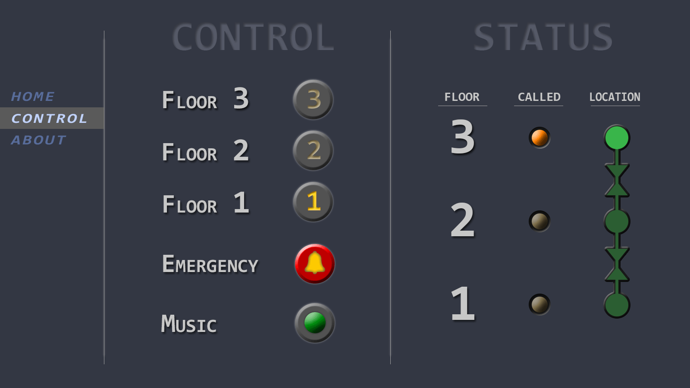
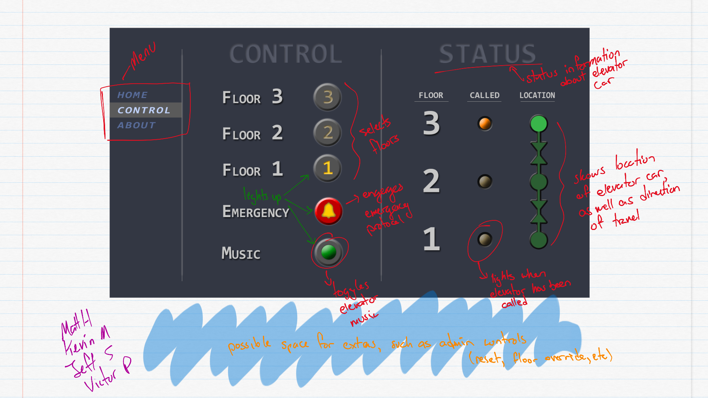
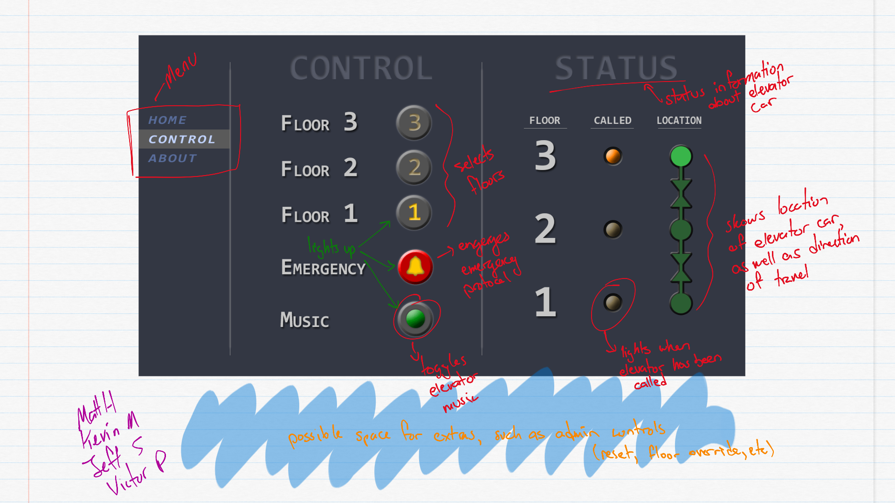

Design Documents
Virtual controls and indicators design.
Virtual controls and indicators design with comments that describe function and design.
Project VI - Designs
This page is for desgin documents.Virtual controls and indicators design.
Virtual controls and indicators design with comments that describe function and design.